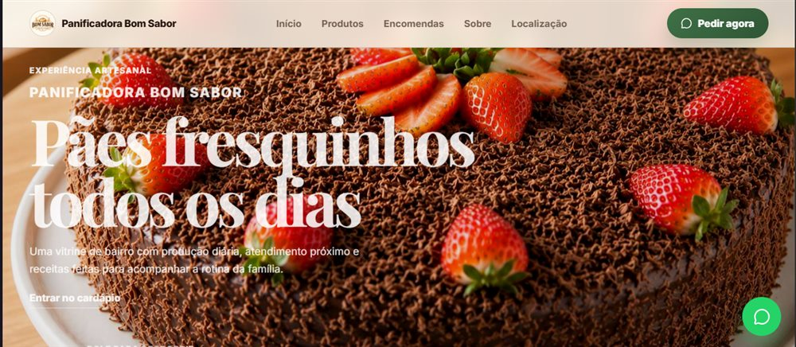
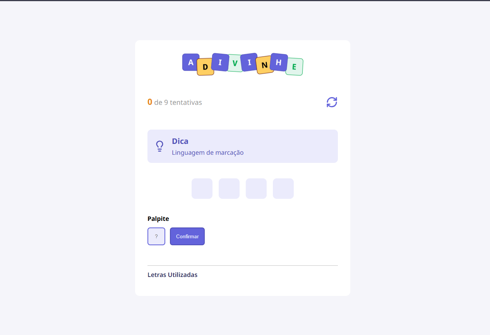
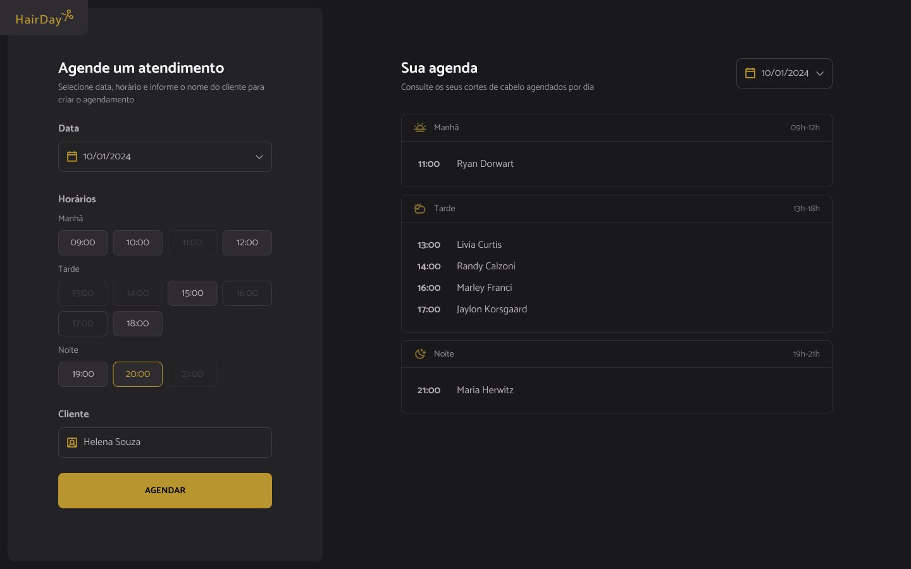
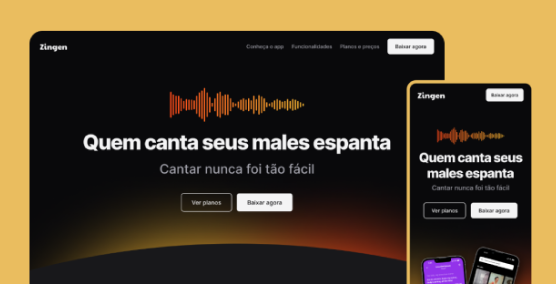
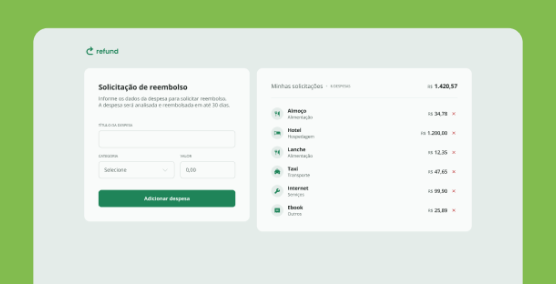
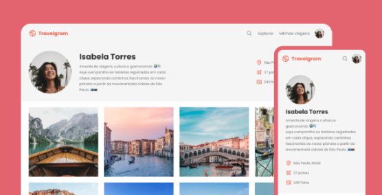
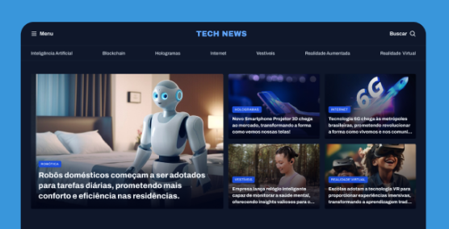
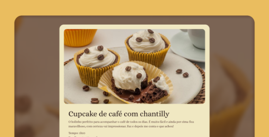
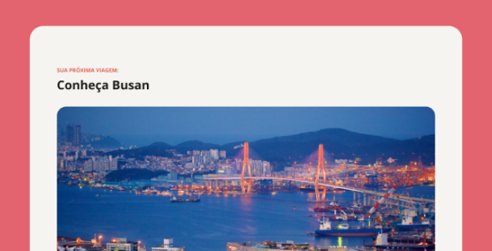

Panificadora Bom Sabor
Landing page para apresentar produtos, fortalecer a identidade local e facilitar o contato com clientes.
Olá, meu nome é Tawhin Chiang
Em busca de oportunidades Front-end
Crio interfaces modernas, responsivas e fáceis de usar com HTML, CSS, JavaScript, TypeScript e React. Minha experiência em suporte de TI me ajuda a compreender problemas reais e construir soluções claras e confiáveis.
Projetos em destaque

Landing page para apresentar produtos, fortalecer a identidade local e facilitar o contato com clientes.

Jogo de palavras que trabalha componentes, estados da interface e regras de interação com tipagem estática.

Aplicação web para listar, criar e excluir agendamentos por meio de uma API organizada em módulos.
Experiência
Minha trajetória em suporte e sistemas fortaleceu minha análise, comunicação e capacidade de resolver problemas.
Fevereiro de 2025 — atual
Prodata Informática · Araguaína, TO
Fevereiro de 2024 — dezembro de 2024
Kothe S.A. · Araguaína, TO
Competências
Use as abas para entender onde cada conhecimento aparece na minha atuação.
Conhecimentos usados para construir páginas claras, responsivas e interativas.
Ferramentas e práticas usadas para organizar, integrar e publicar projetos.
Conhecimentos profissionais que ajudam na integração e na análise de problemas reais.
Portfólio completo
Os filtros ajudam a encontrar rapidamente os trabalhos mais relevantes para cada vaga.
Landing page responsiva para apresentar produtos e facilitar o contato com clientes.
Jogo de palavras desenvolvido com componentes, estados e tipagem estática.
Aplicação web para listar, criar e excluir agendamentos por meio de uma API.


Interface para organizar solicitações e acompanhar informações de reembolso.

Galeria visual de viagens com organização responsiva de perfil e conteúdo.


Página semântica com foco em leitura, hierarquia e apresentação do passo a passo.

Página informativa sobre um destino turístico com conteúdo visual bem organizado.
Sobre e formação
Minha experiência começou no suporte e no desenvolvimento mobile. Hoje direciono meus estudos e projetos para o Front-end, unindo atenção aos usuários, análise técnica e construção de interfaces.
Busco uma oportunidade como Desenvolvedor Front-end Júnior para colaborar com produtos reais, aprender com o time e evoluir com boas práticas.
Graduação
UNOPAR
Janeiro de 2024 — conclusão prevista em julho de 2026Curso técnico
Instituto Federal do Tocantins — IFTO
Janeiro de 2019 — janeiro de 2021Diferenciais
Contato
Estou disponível para conversar sobre vagas Front-end Júnior, projetos e desafios onde eu possa contribuir e continuar evoluindo.